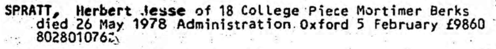
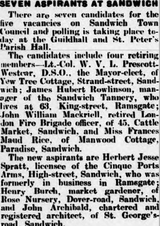
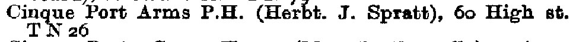

Herbert Jesse Spratt 1894 - 1978
[ Home ] | [ Calendar ] | [ Surnames Index ] | [ Census Index ] | [ Family History ]A hotel manager and licensee and the child of Charles Spratt (a smack owner and fish salesman) and Susannah Thunder, Herbert Spratt, the first cousin twice-removed on the father's side of Nigel Horne, was born in Ramsgate, Kent, England on Aug 16, 18941,2, was baptized there at Christ Church, Vale Square on Oct 7, 1894 and married Ethel Challis (a hotel manageress with whom he had 3 children: Frederick Charles, Douglas Norman and Laurence Herbert, along with 1 surviving child) at Registry Office, Blean, Kent, England on Dec 28, 19145.
During his life, he was living at 44 Addington Street in Ramsgate on Mar 31, 19017 and on Apr 2, 19118; at Cinque Ports Arms, 60 High Street, Sandwich, Kent in 1935 and in 19386; at 2 Sutherland Road, Deal, Kent on Sep 29, 19391; at St Mary's Road, Mortimer Common, Berkshire, England in 1965; and at 18 College Piece, Mortimer, Berkshire in 1978. On Jul 13, 1915 he was serving in the military in France (royal Engineers 54214; 2nd Lt).
He died on May 26, 1978 in Wokingham, Berkshire, England3,4.
Parents
- Charles was born c. May 1854
- Susannah was born in 1851
Children
- Frederick Charles was born in Jul 1917
- Douglas Norman was born on Sep 18, 1920
Citations
- 1939 Register - Findmypast (was the head of the household)
- England & Wales births 1837-2006 - Findmypast
- England & Wales Government Probate Death Index 1858-2019 - Findmypast
- England & Wales deaths 1837-2007 - Findmypast
- England & Wales Marriages 1837-2005 - Findmypast
- 1938 Kelly's Kent Directory
- 1901 England, Wales & Scotland Census - Findmypast (was age 6 and the son of the head of the household)
- 1911 Census for England & Wales - Findmypast (was age 16 and the son of the head of the household)
Media
Herbert Spratt - Ethel Challis - marriage

Herbert Spratt - WW1 military record

Herbert Spratt - probate

Whitstable Times and Herne Bay Herald

Local Elections - Thanet Advertiser - 1-11-1935

1938 Kelly's Kent Directory

England & Wales births 1837-2006 - BMD/B/1894/3/AZ/000519/267
1901 England, Wales & Scotland Census - GBC/1901/0007443350
1911 Census for England & Wales - GBC/1911/RG14/04516/0043/4
England & Wales marriages 1837-2008 - BMD/M/1914/4/AZ/001125/013
England & Wales deaths 1837-2007 - BMD/D/1978/2/AZ/001042/003
1939 Register Transcription - TNA-R39-1703-1703C-031-11
Canterbury Baptisms Transcription - GBPRS-CANT-B-96523533
Medal Index Cards Transcription - GBM-MCI-4217080
England Births & Baptisms 1538-1975 - R_884613014
England & Wales Government Probate Death Index 1858-2019 - GBOR/GOVPROBATE/C/1980-1980/00215173
Family Tree

Generated by ged2site. Last updated on Jun 11, 2024